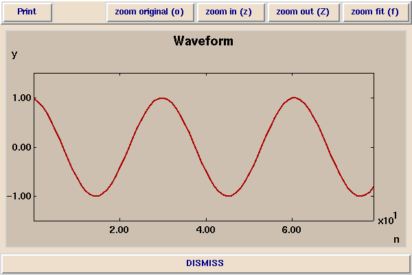
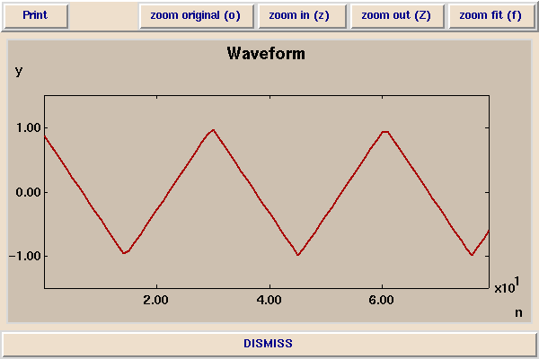
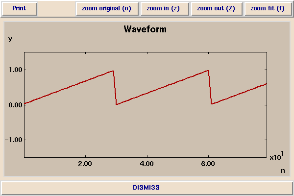
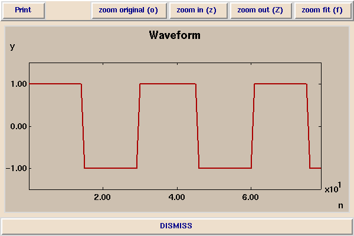

[ Demos ]
[ EECS 20 Home ]
[ Corresponding lecture ]
The Sound of Various Waveforms
In this demonstration, you listen to waveforms with increasingly
complicated frequency content. The simplest is the sinusoid:

Slightly more complicated is a triangle wave:

Yet more complicated is a sawtooth wave:

The most complicated of all is the square wave:

Observations
The more complicated the frequency content, the richer the sound.
Copyright © 1996, The Regents of the University of California.
All rights reserved.
Last updated: %D%,
comments to: eal@eecs.berkeley.edu